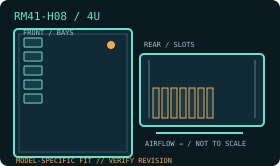

[ MODEL IDENTIFICATION // RM41-H08 ]
SilverStone RM41-H08 4U hot-swap chassis
A 4U rack chassis with model-specific drive, PSU and expansion layouts. Match the enclosure revision, backplane and rail kit before installation.

MODEL NOTE: This record covers the RM41-H08 only. Options, revision-dependent PSU support and installed bay modules may change fit; verify labels and the manufacturer manual before buying replacement parts.
Dimensions & fit specifications
| Rack units / external dimensions | 4U; 430 × 176 × 446 mm (W × H × D); 10.7 kg net. Rails and rear cabling project beyond the body. |
|---|---|
| Motherboard compatibility | SSI-CEB, ATX, Micro-ATX and Mini-ITX. |
| PSU / power compatibility | PS/2 ATX up to 200 mm deep, Mini Redundant, or 2U Redundant for RM41-H08 V2.0 and later. Confirm chassis revision and PSU kit; no power supply is included. |
| Drive bays / backplane | Three external 5.25-inch; five 3.5-inch hot-swap positions (SAS 12G/SATA 6G); four internal 3.5-inch; two 2.5-inch (up to 15 mm); and one 2.5-inch (up to 15 mm) or slim optical (12.7 mm). Backplane is required for SAS/SATA hot-swap; verify the installed backplane harness. |
| Riser / PCIe | Seven standard-height PCI/PCIe positions. Expansion card length is 278 mm with the 5.25-inch cage or 426 mm without it. Check board slot spacing and retaining hardware; no riser is needed/assumed for the standard direct-slot layout. |
| Cooling / service clearances | Front: one 80 × 25 mm fan position; rear: two 80 × 25 mm fans (included); hot-swap cage: one 80 mm fan. CPU cooler height is 130 mm with card retainer or 148 mm without. Keep cage intake clear and reserve rear space for exhaust and cables. |
Compatibility & service notes
The 2U redundant PSU option is revision-gated (V2.0+). Check the label before purchasing replacement power hardware. The cage, retainer, optical bay and card length compete for internal space; use the matching RM41-H08 revision manual for each conversion.
- Measure the complete installed depth: chassis, rack ears/slides, cable-management arm if fitted, connectors and cable bend radius.
- Maintain clear front intake and rear exhaust access; do not obstruct removable fan, drive, PSU or backplane service paths.
- Before hot-swap work, confirm the controller/backplane interface and follow the chassis manual’s power-down and ESD procedure.
Manufacturer sources
- SilverStone — RM41-H08 product specificationsManufacturer source for board, bay, fan, PSU, slot and clearance data.
- SilverStone — RM41-H08 installation manual (PDF)Manufacturer installation manual; check the separate V2 manual when fitting revised PSU support.